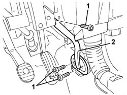

7040A95 (One), REINFORCEMENT BRACKET left or right, between DASHBOARD supporting crossmember and bodyshell - R.R.
- Path
- Procedures > 70 FITTINGS > 7040 BODYSHELL INTERIOR TRIMS AND FITTINGS > 7040A passenger compartment trim > 7040A95 (One), REINFORCEMENT BRACKET left or right, between DASHBOARD supporting crossmember and bodyshell - R.R.
- Kind
- repair procedure (removal / refitting; the operation number is the code)
- Applies to
- all engines; all production periods
- Interactive page
- https://sloeber94.github.io/elrnDB-a147/en/#/3025805
Applies to: all engines; all production periods
 Removing
Removing
 Refitting
Refitting7040A65 passenger compartment box lock , one , r r
1. Undo the bracket retaining bolts.
2. Remove the bracket.

Applies to: all engines; all production periods
Refitting
RemovingCheck that the bracket is not damaged.
Position the bracket.
Tighten the bracket retaining bolts.
Topics linked from this page (2)
Topics that link to this page (15)
- 3330D11 brake servo - r r including seperation from master cylinder - facia lining removed for rhd version
- 5040A80 expansion/connection pipe - r r
- 5040B30 expansion valve (tube orifice) - r+r
- 5040C10 air conditioner box - r+r
- 5040C15 air conditioner housing - r r with facia disconnected for versions with passenger airbag
- 5040C50 air conditioner heater radiator - r+r
- 5040C64 a/c evaporator - r+r
- 5040D84 air conditioner left hand air mixer flap control motor - r r
- 5040D90 air conditioner system wiring bundle - r r
- 5505C34 intergrated instrument under facia front air bag wiring - r r
- 5505C41 cabin wiring - r r
- 7040A97 facia trim support beam - r r
- 7040A98 instrument facia trim support beam - r r with facia removed
- 7040L10 cabin floor carpet - r r
- 7040L13 passenger compartment floor soundproofing - r r